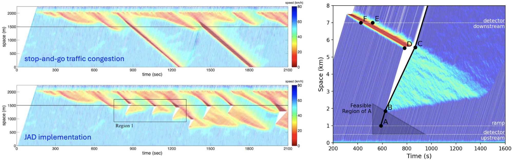

Resolving Traffic Congestion by Dispatching Dedicated Vehicles
Overview
Jam-absorption driving (JAD) is a targeted traffic-control strategy for suppressing stop-and-go waves on freeways. Instead of relying on fixed roadside infrastructure, JAD uses a dedicated vehicle inside the traffic stream to perform a carefully timed slow-in and fast-out maneuver before it reaches a moving jam. By temporarily reducing the inflow into the wave, the dedicated vehicle can help the jam shrink and disappear while allowing downstream traffic to recover.

My series of studies pioneers the field of JAD-based traffic congestion mitigation.
- In 2017, we proposed one of the first JAD strategies for mitigating traffic oscillations, showing how a dedicated vehicle can regulate its speed to absorb moving jams and reduce multiple traffic waves[1].
- We reviewed stop-and-go traffic wave suppression strategies by comparing variable speed limits (VSL) and JAD, clarifying their shared logic, complementary strengths, and open research opportunities[2].
- The above careful review shows that existing JAD strategies are often overly idealized and depend on strong assumptions. To address this limitation, we propose a more practice-oriented JAD strategy that translates real-world police-car swerving behavior (Video Below) into the design of JAD vehicles[3].
Publications
[1]A Jam-Absorption Driving Strategy for Mitigating Traffic Oscillations
[2]A Review of Stop-and-Go Traffic Wave Suppression Strategies: Variable Speed Limit Versus Jam-Absorption Driving
[3]Transforming Police-Car Swerving for Mitigating Isolated Stop-and-Go Traffic Waves: A Practice-Oriented Jam-Absorption Driving Strategy